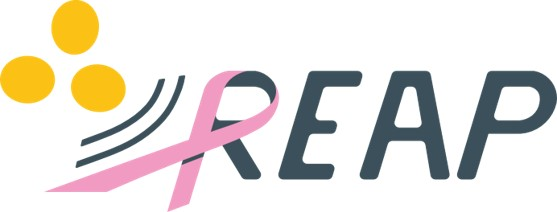
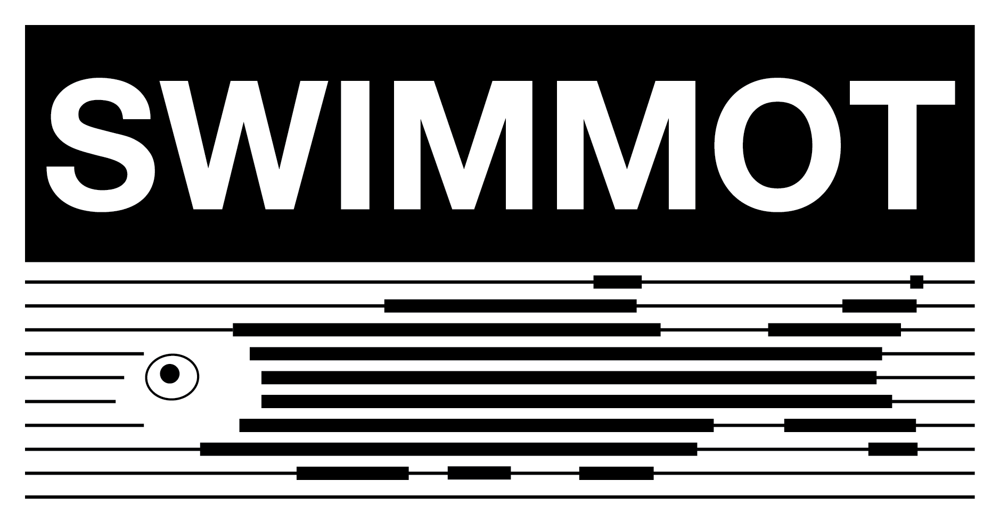

REAP

Contrast-enhanced OCT and photoacoustic tomography for revealing drug-tolerant persister cells in cancer.
€6.19MFunding
More than €7.5 million in competitive funding, including leadership roles in major European collaborations.

Contrast-enhanced OCT and photoacoustic tomography for revealing drug-tolerant persister cells in cancer.
€6.19M
Switchable magneto-plasmonic contrast agents and molecular imaging technologies.
€0.77M work packageLinking skin morphology and vasculature with disease using optical imaging.
€270KA comprehensive OCT solution for skin cancer from cells to vessels.
€49.5KContact
Medical University of Vienna
Währinger Gürtel 18–20, AKH 4L
1090 Vienna, Austria